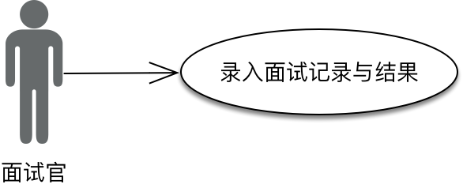
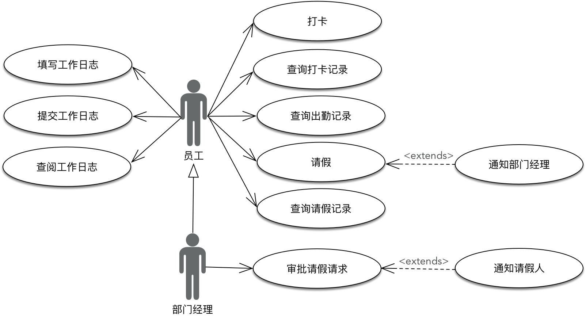
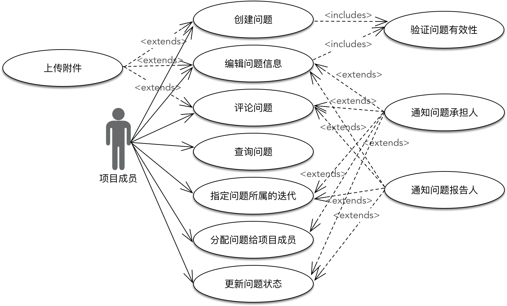
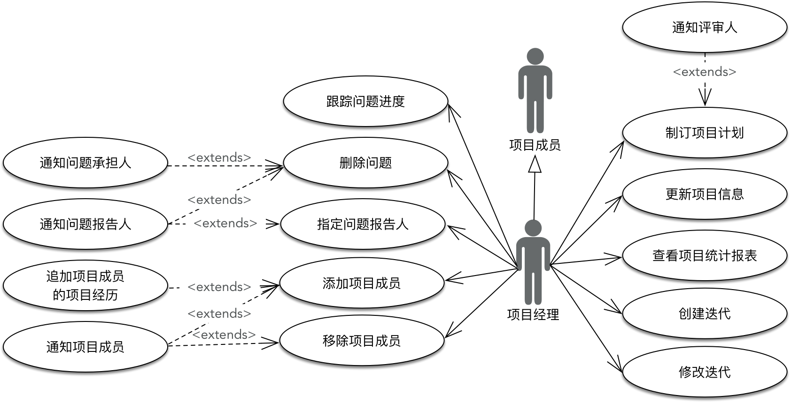

- 001 「战略篇」访谈 DDD 和微服务是什么关系？.md.html
- 002 「战略篇」开篇词：领域驱动设计，重焕青春的设计经典.md.html
- 003 领域驱动设计概览.md.html
- 004 深入分析软件的复杂度.md.html
- 005 控制软件复杂度的原则.md.html
- 006 领域驱动设计对软件复杂度的应对（上）.md.html
- 007 领域驱动设计对软件复杂度的应对（下）.md.html
- 008 软件开发团队的沟通与协作.md.html
- 009 运用领域场景分析提炼领域知识（上）.md.html
- 010 运用领域场景分析提炼领域知识（下）.md.html
- 011 建立统一语言.md.html
- 012 理解限界上下文.md.html
- 013 限界上下文的控制力（上）.md.html
- 014 限界上下文的控制力（下）.md.html
- 015 识别限界上下文（上）.md.html
- 016 识别限界上下文（下）.md.html
- 017 理解上下文映射.md.html
- 018 上下文映射的团队协作模式.md.html
- 019 上下文映射的通信集成模式.md.html
- 020 辨别限界上下文的协作关系（上）.md.html
- 021 辨别限界上下文的协作关系（下）.md.html
- 022 认识分层架构.md.html
- 023 分层架构的演化.md.html
- 024 领域驱动架构的演进.md.html
- 025 案例 层次的职责与协作关系（图文篇）.md.html
- 026 限界上下文与架构.md.html
- 027 限界上下文对架构的影响.md.html
- 028 领域驱动设计的代码模型.md.html
- 029 代码模型的架构决策.md.html
- 030 实践 先启阶段的需求分析.md.html
- 031 实践 先启阶段的领域场景分析（上）.md.html
- 032 实践 先启阶段的领域场景分析（下）.md.html
- 033 实践 识别限界上下文.md.html
- 034 实践 确定限界上下文的协作关系.md.html
- 035 实践 EAS 的整体架构.md.html
- 036 「战术篇」访谈：DDD 能帮开发团队提高设计水平吗？.md.html
- 037 「战术篇」开篇词：领域驱动设计的不确定性.md.html
- 038 什么是模型.md.html
- 039 数据分析模型.md.html
- 040 数据设计模型.md.html
- 041 数据模型与对象模型.md.html
- 042 数据实现模型.md.html
- 043 案例 培训管理系统.md.html
- 044 服务资源模型.md.html
- 045 服务行为模型.md.html
- 046 服务设计模型.md.html
- 047 领域模型驱动设计.md.html
- 048 领域实现模型.md.html
- 049 理解领域模型.md.html
- 050 领域模型与结构范式.md.html
- 051 领域模型与对象范式（上）.md.html
- 052 领域模型与对象范式（中）.md.html
- 053 领域模型与对象范式（下）.md.html
- 054 领域模型与函数范式.md.html
- 055 领域驱动分层架构与对象模型.md.html
- 056 统一语言与领域分析模型.md.html
- 057 精炼领域分析模型.md.html
- 058 彩色 UML 与彩色建模.md.html
- 059 四色建模法.md.html
- 060 案例 订单核心流程的四色建模.md.html
- 061 事件风暴与业务全景探索.md.html
- 062 事件风暴与领域分析建模.md.html
- 063 案例 订单核心流程的事件风暴.md.html
- 064 表达领域设计模型.md.html
- 065 实体.md.html
- 066 值对象.md.html
- 067 对象图与聚合.md.html
- 068 聚合设计原则.md.html
- 069 聚合之间的关系.md.html
- 070 聚合的设计过程.md.html
- 071 案例 培训领域模型的聚合设计.md.html
- 072 领域模型对象的生命周期-工厂.md.html
- 073 领域模型对象的生命周期-资源库.md.html
- 074 领域服务.md.html
- 075 案例 领域设计模型的价值.md.html
- 076 应用服务.md.html
- 077 场景的设计驱动力.md.html
- 078 案例 薪资管理系统的场景驱动设计.md.html
- 079 场景驱动设计与 DCI 模式.md.html
- 080 领域事件.md.html
- 081 发布者—订阅者模式.md.html
- 082 事件溯源模式.md.html
- 083 测试优先的领域实现建模.md.html
- 084 深入理解简单设计.md.html
- 085 案例 薪资管理系统的测试驱动开发（上）.md.html
- 086 案例 薪资管理系统的测试驱动开发（下）.md.html
- 087 对象关系映射（上）.md.html
- 088 对象关系映射（下）.md.html
- 089 领域模型与数据模型.md.html
- 090 领域驱动设计对持久化的影响.md.html
- 091 领域驱动设计体系.md.html
- 092 子领域与限界上下文.md.html
- 093 限界上下文的边界与协作.md.html
- 094 限界上下文之间的分布式通信.md.html
- 095 命令查询职责分离.md.html
- 096 分布式柔性事务.md.html
- 097 设计概念的统一语言.md.html
- 098 模型对象.md.html
- 099 领域驱动设计参考过程模型.md.html
- 100 领域驱动设计的精髓.md.html
- 101 实践 员工上下文的领域建模.md.html
- 102 实践 考勤上下文的领域建模.md.html
- 103 实践 项目上下文的领域建模.md.html
- 104 实践 培训上下文的业务需求.md.html
- 105 实践 培训上下文的领域分析建模.md.html
- 106 实践 培训上下文的领域设计建模.md.html
- 107 实践 培训上下文的领域实现建模.md.html
- 108 实践 EAS 系统的代码模型.md.html
- 109 后记：如何学习领域驱动设计.md.html
- 捐赠
031 实践 先启阶段的领域场景分析（上）
在先启阶段，我们确定了 EAS 的问题域与核心的业务流程，然后根据业务期望与愿景确定项目的业务范围，明确史诗级故事和主故事。这个过程既有利于我们对项目的整体理解，以便于确定需求列表、排定需求的优先级从而制订发布与迭代计划，又利于对领域进行建模，确定限界上下文和上下文映射，进而设计整个系统的架构。同时，我们又要准确地把握“故事（Story）”的粒度，不至于沉入到过分细粒度的需求实现细节，影响了先启阶段的实施进度。
所谓故事的层次（粒度）并没有固定的标准，在用户故事地图中，提出了三个层次：
- 用户活动
- 用户任务
- 用户故事
这里提到的用户活动就相当于史诗级故事，组成用户活动的用户任务相当于主故事，再按照 INVEST 原则继续对其进行分解，就可以获得在敏捷迭代中构成开发任务的用户故事。在[第 2-4 课：运用领域场景分析提炼领域知识（下）]中，我给出了三种不同层次的领域场景分析方法。
- 用例尤其是用例图的抽象能力更强，更擅长于对系统整体需求进行场景分析；
- 用户故事提供了场景分析的固定模式，善于表达具体场景的业务细节；
- 测试驱动开发则强调对业务的分解，利用编写测试用例的形式驱动领域建模，即使不采用测试先行，让开发者转换为调用者角度去思考领域对象及行为，也是一种很好的建模思想与方法。
因此，我个人比较倾向于在先启阶段的需求分析过程中，使用用例来表述领域场景。恰好在 Cockburn 的著作《有效编写用例》中，他提到用例的层次包括：概要目标、用户目标和子功能。例如：
这里的用户目标就代表着具有业务价值的领域场景，也就是我们需要识别出来的主用例，它由多个子功能组成，它们之间的关系就是主故事与用户故事之间的差别。结合前面分析的问题域和业务流程，我们可以初步获得 EAS 的史诗级故事与主故事。
史诗级故事和主故事
结合 EAS 的业务愿景和核心流程，我们通过深入地需求调研，获得了 EAS 的史诗级故事和主故事。
管理客户关系
通过对客户全方位信息的统一管理，可以实现市场部工作人员、需求承担部门之间快捷、方便的信息共享，提高工作效率，并且可为集团负责人提供最实时、有效的客户信息，包括潜在客户的信息。这些信息包括客户基本信息、市场部拜访客户的记录还有客户活动记录、客户的背景资料以及客户公司的商务负责人资料。
管理客户关系的主要目的是改进和维护客户关系，因此它包括如下主故事：
- 管理潜在客户信息
- 管理客户信息
- 对客户进行分类
- 查询客户信息
- 客户满意度调查
- 维护拜访记录
- 维护客户活动记录
管理市场需求
市场人员可以收集市场需求，并与客户接触，明确这些市场需求。在创建市场需求后，需要对市场需求进行评估，进行财务核算，从而确定需求订单和客户需求，确定需求承担者。市场人员应随时跟踪需求订单的状态，并及时向客户反馈。同时，市场人员还可以查询市场需求和需求订单。包括的主故事有：
- 录入市场需求
- 查询市场需求
- 修改市场需求
- 评估市场需求
- 创建需求订单
- 指定客户需求的承担者
- 跟踪需求订单状态
- 更新需求订单状态
管理商务合同
签订的合同来自于需求订单，一个需求订单可能会创建多份商务合同。在正式签订合同之前，作为合同的创建者，可以向相关部门的负责人发起合同评审流程，并按照评审后的要求修改合同。为了便于对合同的管理，应提供查询合同与跟踪合同进展状态的功能。合同一旦经过甲方、乙方审批通过并正式签订后，就不允许任何角色和用户修改。如果要修改合同，应该是增加一份附加合同。包括如下主故事：
- 录入合同
- 添加附加合同
- 指定合同承担者
- 更新合同状态
- 为合同添加评论
管理员工
人力资源部负责对员工基本信息的管理，包括员工技能列表、语言技能、项目经验等，还要管理每位员工的日常考勤。根据组织结构的定义与授权，每位员工的直接管理者还要检查员工工作日志的填写情况，了解每位员工的工作状况。包括如下主故事：
- 管理员工基本信息
- 将储备人才转为正式员工
- 管理员工的劳务合同
- 追加员工的项目经历
- 考勤
- 填写工作日志
招聘人才
根据市场部的需求以及集团自我的发展，作为人力资源部的管理人员，需要制定招聘计划，更新和查询招聘状态。每次应聘人员的面试活动（包括电话面试、笔试、技术面试等）以及测评结果都需要记录下来归档。对于每一位应聘者，需要对投递过来的简历进行归档和录入。人力资源部的工作人员可以根据自己需要对储备人才进行分类，从而对简历进行分类管理。包括如下主故事：
- 制定招聘计划
- 审核招聘计划
- 修改招聘计划
- 查看招聘计划
- 删除招聘计划
- 输入面试记录与测评结果
- 管理储备人才信息
- 管理储备人才简历
管理项目
集团的项目有两种类型：承包项目和外派项目。不同项目类型的流程是不相同的。承包项目牵涉到对整个项目进度的跟踪，从需求到设计到开发实现和测试的全生命周期管理；外派项目则是人力资源外包，仅仅需要管理外派人员的工作情况即可。项目管理人员需要创建项目，根据项目类型和管理流程选择计划模板制订项目计划，并通过该模块查询和跟踪项目进展情况，更新项目状态。包括的主故事为：
- 创建项目
- 制订项目计划
- 创建迭代任务
- 分配任务给项目成员
- 更新项目状态
- 更新任务状态
- 为任务添加评论
- 查询项目情况
- 跟踪项目进度
- 查看指定迭代的所有任务
管理项目成员
一旦立项后，就可以为项目分配项目成员以及分配项目成员的角色，项目管理人员可以对项目成员的信息进行管理。包括如下主故事：
- 添加项目成员
- 移除项目成员
- 调整项目成员的角色
- 查看项目成员的任务状态
管理工位与硬件资源
作为服务中心的工作人员，可以管理公司现有的硬件资源信息以及工位信息。通过系统，可以将硬件资源与工位分配给集团的员工，若未分配，则为闲置硬件与工位。包括如下主故事：
- 管理硬件资源
- 管理工位
决策分析
作为集团的管理者，需要查看集团各部门的工作情况，包括需求订单情况、项目进展情况、人员利用率等综合报表，并结合各部门具体情况，定期提供日报表、周报表、月报表、季度报表和年报表。
运用用例分析方法
在先启阶段的领域场景分析过程中，我们可以运用用例分析方法对 EAS 进行需求分析。用例的驱动力是业务流程与参与者，参考的内容则为业已识别出来的史诗级故事和主故事。同时，在识别用例的过程中，还应该尽量通过用例表达领域知识，力求获得“统一语言”。典型的用例描述是一个动宾短语，体现了参与者在业务场景需要履行的职责，又或者是满足用例规格的业务行为。
为了保证用例分析方法的简洁，避免在先启阶段出现“分析瘫痪”，我将传统的用例分析方法分为两个步骤。在先启阶段进行领域场景分析时，只需要使用用例图，而非详尽的用例规格说明。至于用例的流程描述则过于死板和繁琐，我建议使用用户故事对需求进行阐述，并作为第二个步骤放在迭代开始后的领域驱动战术设计阶段。
在绘制用例图时，可以基于识别出来的史诗级故事来绘制，亦可以按照参与业务流程的参与者（Actor）来绘制。无论采用何种方法，这个过程都需要团队与领域专家通力合作，从业务而非技术实现的角度剖析领域需求，最后推导出真正能表达领域概念的用例图。
在这里，我展现的用例分析方法以参与者（Actor）为用例分析的起点，分析步骤为：
- 确定业务流程，通过业务流程识别参与者（Actor）；
- 根据每个参与者识别属于该参与者的用例，遵循一个参与者一张用例图的原则，保证用例图的直观与清晰；
- 对识别出来的用例根据语义相关性和功能相关性进行分类，确定用例的主题边界，并对每个主题进行命名。
根据业务流程确定参与者
如果考虑 EAS 的核心业务流程，可以初步识别出如下参与者：
- 集团决策者
- 市场人员
- 子公司
- 财务
- 人事专员
- 招聘专员
- 人力资源总监
- 面试官
- 项目管理办公室
- 项目经理
- 项目成员
- 员工
- 部门经理
- 服务中心
在识别参与者（Actor）时，要注意以下问题。
- 参与者不一定是人，可以是一个系统、服务或模块，也可以是一个部门。例如，定时器可以根据事先设定的规则给相关人员发送通知，此时，定时器作为一个组件成为了参与者；项目管理办公室发起项目的立项，此时，项目管理办公室作为一个部门成为了参与者。
- 当参与者为同一部门的不同角色时，可以考虑参与者的泛化关系，也可以理解为完全不同的参与者。例如，招聘专员参与的用例包括“制定招聘计划”、“修改招聘计划”和“审核招聘计划”，但第三个用例只有人力资源总监才具有操作权限。这时，可以认为人力资源总监是招聘专员的一种特化，但亦可以视为两个完全不同的参与者。当人力资源总监在操作前两个用例时，本质是扮演了招聘专员这个参与者在执行。
- 参与者不同于设计模型中的角色（Role），前者来自领域场景，是真实业务场景的参与对象，后者是对职责的抽象。例如，“评论商品”用例的参与者，可以是买家和卖家，但在设计模型中，可以抽象为评论者角色。
根据参与者识别用例
在识别参与者时，一些用户体验设计的实践是为参与者建立一个用户画像（Persona），即给出更为具体的用户特征和属性，从而得到一个如身临其境一般的场景参与者，然后设身处地思考他或者她是如何参与到这个领域场景中的。无论是否建立用户画像，这种场景模拟的方式对于用例分析都是有帮助的。
市场人员的用例图
让我们首先思考“市场人员”这个参与者。作为一家软件外包的集团公司，它与产品销售公司不同，没有售前和售后人员来负责推销商品和开展售后维护，保持与客户之间的良好关系。市场部作为开拓市场、寻找客户合作机会、维持客户关系、开展需求合作谈判的职能部门，承担了需求管理、客户管理和合同管理的职责，而市场人员作为市场部员工，全程参与了从市场需求、客户洽谈到合同签署的整个市场活动全过程。因此，市场人员参与的用例几乎涵盖了客户关系管理与市场需求两个核心子领域。这些用例关系如下图所示：
在绘制这个用例图时，我主要参考了以下内容。
- 识别的主故事：分析这些主故事的用户目标是什么，进而就可以确定应该是哪个参与者发起该用例。
- 对市场人员的调研：与市场人员进行沟通，了解该角色目前的工作任务。
- 业务流程：从组成业务流程的各个环节判断参与者与功能之间的关系。
子公司的用例图
子公司在 EAS 中，主要作为需求的承担者。承担需求的工作属于项目管理的范畴，真正的参与者是项目经理和项目成员。在核心业务流程中，当市场人员在创建了市场需求后，要由该需求的承担者即子公司负责评估，签订合同时，也需要子公司确认。此时，子公司会以部门作为整体参与到领域场景中，用例图为：
在识别“确认合同履行”用例时，我们仔细分析了业务需求。由于子公司是合同的承担者，因此履行需求合约的乙方是子公司而非集团市场部。市场人员会作为需求的委托者草拟合同，并在 EAS 中负责创建合同及上传合同附件。合同的真正签署者是子公司，但这个签订的过程是线下行为，子公司领导只需要在 EAS 系统中完成合同的确认即可。
在子公司的用例图中，包含了“为合同添加评论”用例，它同时也是市场人员的用例。不同参与者使用相同的用例，这是完全正常的。但它也给我们传递了一个信号，就是在设计模型中，我们可以考虑为该用例抽象一个角色，如“合同评论者”。在编码实现时，该角色可能会作为一个权限角色，用以控制评论合同的功能权限，也可以考虑为其定义一个角色接口。
财务的用例图
财务中心的“财务”参与者也参与了市场需求的核心业务流程：
根据前面对系统上下文的定义，EAS 的业务范围并未包含工资结算、财务成本核算等。因此在用例图中，财务仅仅负责市场需求的财务核算。
人事专员的用例图
我将人力资源部中负责管理员工信息的参与者定义为“人事专员”，员工的基本信息管理与考勤都由他（她）来负责。其用例图为：
对于员工的管理，我最初定义的用例为“管理员工信息”；然而，“管理”这个词语稍显宽泛，无法准确表达领域行为。这种过于抽象的用例描述可能会导致我们忽略一些必要的领域概念，并让领域行为变得模糊化。经过与人事专员的沟通，我们一致认为在员工管理的场景中，对员工的管理其实包括以下内容。
- 办理员工入职：入职体现了领域概念，要好于新建员工的描述。
- 办理员工离职：离职体现了领域概念，要好于删除员工的描述，何况员工的离职未必一定要删除该员工记录。
- 录入员工信息：录入员工基本信息、项目经历、技能、语言能力等。
在主故事列表中，属于人事专员的职责还包括“追加项目经历”。然而，通过深入分析用例，我们发现该用例其实应该发生项目管理过程中，作为“添加项目成员”的扩展用例，一旦员工被加入到项目，就会被触发。
招聘专员的用例图
负责招聘的人力资源部员工被定义为“招聘专员”，用例图如下所示：
招聘专员在制定或修改招聘计划之后，需要由人力资源总监对计划进行审核，这是两个不同的参与者，人力资源总监的用例图为：
除了招聘专员会参与面试过程之外，人力资源部之外的其他员工可能会作为面试官参与面试。无论是招聘专员，还是面试官，都需要在面试之后输入面试记录与面试结果，故而引入了“面试官”参与者：

员工的用例图
集团的每一名员工都需要考勤和填报工作日志。注意在下图，我没有像人事专员与人力资源总监那样，将员工和部门经理定义为两个完全独立的参与者，而是采用泛化关系表达。仔细体味这之间的微妙差别。人力资源总监可以审核招聘计划，但却不会直接去制定或修改招聘计划，他（她）与人事专员之间有一个比较明显的层级关系，对应的是不同的权限。而部门经理就是一名员工，这种泛化关系是确定无疑的。

注意用例图中“查询打卡记录”和“查询出勤记录”之间的差异。打卡记录是考勤机每天留存的信息，出勤记录则是根据集团的考勤制度并结合员工的请假信息和打卡记录生成的记录内容。
工作日志定时器的用例图
这里还有一个特殊的参与者，在之前识别参与者时被忽略了，那就是提醒填报工作日志的定时器：
项目管理办公室的用例图
项目管理办公室是以部门作为参与者在项目管理场景中出现，它是整个项目的发起者、评审者，也只有它才有权终止项目或结束项目。项目管理办公室参与了整个项目管理流程的监督，但并不参与项目的具体活动：
“立项”与“结项”用例是项目流程中的关键节点，由项目管理办公室发起。当立项完成后，一个新的项目就会被创建；项目结项则意味着项目的状态发生变更。如果我们将用例命名为“创建新项目”、“更改项目信息”就不符合项目管理的统一语言。
注意，“通知项目经理”既作为了“评审项目计划”的扩展用例，又作为了“指定项目经理”的扩展用例。当然，在业务上，虽然同为通知，但通知的内容并不相同。在项目管理场景中，所有与通知有关的用例都作为扩展用例出现；事实上，在所有核心领域场景中，通知用例都不是主用例，毕竟它并不参与核心业务。
项目成员的用例图
项目成员与项目经理之间存在泛化关系，因为当项目经理在创建（编辑）一个问题（Issue）时，就是作为一名项目成员执行的操作；二者的差异还是角色不同导致的权限差异。项目成员的用例图如下所示：

我们在识别史诗级故事和主故事时，使用了“任务（Task）”来表达项目管理过程中分配给项目成员的工作；而在用例图中，我们却改为了“问题（Issue）”。“问题”是对任务、史诗故事、用户故事、缺陷的一个抽象，这是在项目管理领域中得到公认的领域概念。任务这个词语其实是与用户故事（User Story）、史诗故事（Epic）、缺陷（Defect）属于同一等级的概念，根据“单一抽象层次原则”，使用“任务”进行抽象显然不再合适。
当我们创建一个问题时，需要指定问题的基本属性，如问题的标题、描述、问题类型等。那么，问题所属的迭代、承担人（Owner）、报告人（Reporter）是否也作为问题的属性呢？我们在设计用例图时，确实困惑不已，甚至考虑过将上图中“指定问题所属的迭代”与“分配问题给项目成员”用例作为“创建问题”、“编辑问题”的包含用例。经过思索再三，最终还是认为这两个用例是有用户目标的，即提供了明显的业务价值，应该将其作为主用例，与项目成员之间存在“使用（Use）”关系。同样的，“更新问题状态”也没有出现在最初的用例图中，但实际上它与“编辑问题信息”有着完全不同的用户目标，有必要成为项目成员的主用例。
项目经理的用例图
在项目经理用例图中，“指定问题报告人”用例也是出于同样的考虑因素：

在项目经理的用例图中，最初我并没有识别出“跟踪问题进度”用例。后来，我发现我将“查询问题”与“跟踪问题进度”二者混为一谈了，这其实是不正确的。“查询问题”用例是查询符合各种搜索条件的问题，例如查询当前迭代的所有问题，查询当前迭代所有未完成的问题，查询项目成员的所有问题等；“跟踪问题进度”的着眼点是了解当前问题的完成情况，是对进度的跟踪；二者有着不同的用户目标。
服务中心的用例图
“服务中心”也是一个部门作为领域场景的参与者，该参与者的用例非常清晰，就是针对工位和硬件资源的管理：
集团决策者的用例图
最后是“集团决策者”，该参与者的用例主要是查看表达供需关系的统计报表：
就像写真时，为求画面的真实准确，必须寻找一个唯一的坐标一样，绘制用例图的唯一参考坐标就是参与者（Actor）。每个参与者的用例图或许大小不一，粒度不均，但自身是完全独立的，参与者之间（除了存在泛化关系的参与者）的用例图互不干扰，清晰地勾勒出各自观察视角得到的领域行为。
© 2019 - 2023 Liangliang Lee. Powered by gin and hexo-theme-book.